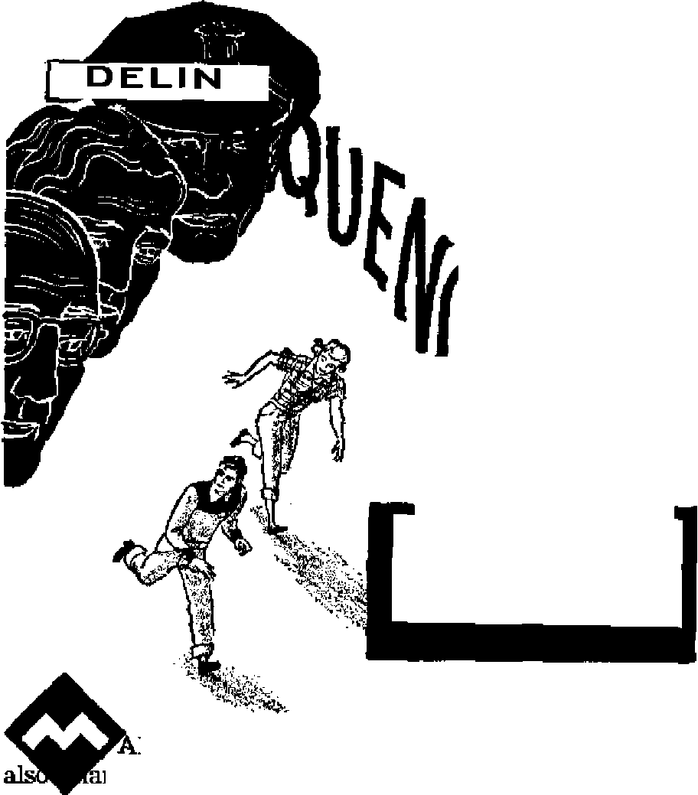
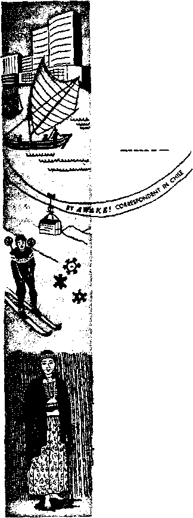

DELINQUENCY -ITS CAUSES AND REMEDY
Expert opinions return to Bible principles
Sir Anthony Eden Under Fire
Tanks and tantrums in the sceptered isle
Beat the Heat with Air Conditioning
The how and why of selecting an air conditioner
The Wisdom Behind Nature
A powerful proof of creation
News sources that are able to keep you awake to the vital issues of our times must be unfettered by censorship and ielfish interests. “Awake I” has no fetters. It recognizes facts, faces facts, is free to publish facts. It is not bound by political ambitions or obligations; it is unhampered by advertisers whose toes must not be trodden on; it is unprejudiced by traditional creeds. This journal keeps itself free that it may speak, freely to you. But it does not abuse its freedom. It maintains integrity to truth.
“Awake I” uses the regular news channels, but is not dependent on them. Its own correspondents are on all continents, in scores of nations. From the four corners of the earth their uncensored, on-the-scenes reports come to you through these columns. This journal’s viewpoint is not narrow, but is international. It is read in many nations, in many languages, by persons of all ages. Through its pages many fields of knowledge pass in review—government, commerce, religion, history, geography, science, social conditions, natural wonders—why, its coverage is as broad as the earth and as high as the heavens.
“Awake I” pledges itself to righteous principles, to exposing hidden foes and subtle dangers, to championing freedom for all, to comforting mourners and strengthening those disheartened by the failures of a delinquent world, reflecting sure hope for the establishment of a righteous New World.
Get acquainted with “Awake!” Keep awake by reading “Awakel”
PnBUSnw 8SMIM0NTHIT Hr WATCHTOWER BIBLE AND TRACT SOCIETY, INC.
117 Adama Street Brooklyn 1, N, Y., U. 8. A.
N. EL Kkobb, Fr«<£ten#
PrJntihfi thie issue: 1,750.000
Otb* lin|iu» In wftlth “Awnk*!" h
St>hMflth|y—Afrikaun. Firm tab, French, (termio, HolJandfei), lUIian, Nonregiap. Spanish, Bwediib, lUirtNy—D«.Wu Grtt>, Japanese, Portufune, dcnlciio.
Office* Yearly Btibtifriptlm rale
AimtI**. U.S,, U7 Adams BL, Brooklyn 1, N.Y.
Aartralto, 11 Beresford Rd,, fftratirttald, N.S W S/~
Canaft, 150 Brldgeland Ate., Park Boid P.O,,
Toronto 10, Ontario ||
Ee*lindt 84 Craven Terrace, lyrndoo, W. 2 7/-
Unt Zealand, ftM. Boi 30, Wellington, 1 7/-fieeth Africa, Private Bag, ElandsfonteiD, Tri. 7/*
Gbant Suites, .Secretary
Five cente a CQpy
Enlcrtd a* becoruJ-class matter at Brooklyn, N.Y., Act1 of March 3,
RMiHtMMs should he sent to office in yens- country Io compliaiKe wifi) regulations to auirante* «sfr delliefy of tnottr. SralttaDcef are accepted a: Brooklyn from coonirle* where no office Is located, by in tern*Lienal money order only. Subscript-Ion rate* to different countries are bere stated to local rarrency- Mofl« wf axpiraflM (with rerwwil blank > is sent at least two Issue* before subscription n-rdres. Chante of addms when sect to our offie« may be expected effective within one month. Bend your old as well as new addrerw,
1871?. Printed In U.S.A.
CONTENTS
Delinquency—Its Causes arid Remedy
Preaching to the Ends of the Earth ■
Tax Officials Thought They Had Him
Beat the Heat with Air Conditioning
Mandioca, the Bread of Paraguay
Bribing Dogs with Dog Biscuits Sir Anthony Eden Under Fire Browbeating the Beetle?
“Your Word Is Truth”
Mother and Father Worship Unscriptural
Jehovah’s Witnesses Preach in AU the Earjh—Southern Rhodesia Do You Know?
Watching the World
7ke
N EVER before in history has so much nonsense appeared R in print. There is a fad lor non- V sense. A nonsense fad turns people away from what Is true, righteous, upbuilding and of serious con-jcem; it turns people aside to false stories. So strongly has the nonsense fad gripped the masses that nonsense has become a nation’s best-selling subject.
In January a book was published in ’ the United States called The Search for Bridey Murphy. In March the book had soared to the number one spot on best-selling lists. Yet what Is this book about?
It is a book written by Morey Bernstein, an amateur hypnotist.. This hypnotist put a Pueblo, Colorado, housewife in a trance. The housewife’s name is Virginia Tighe, but to avoid publicity she prefers to be called Ruth Simmons, While in a trance, Ruth Simmons was asked by the hypnotist to go back to her childhood. Then he asked her to go back before her birth. Suddenly the housewife began talking about Bridey Murphy.
Ender hypnosis Ruth Simmons said that she had lived once before—in Ireland from 1798 to 1864. She said her name then was Bridey Murphy. Briefly, this is what Ruth
J£>nsEnse
Simmons said about Bridey:
Bridey lived with her parents S in Cork, Ireland. They lived in a wooden house. Bridey married Sean Brian MacCarthy and moved to Belfast. There her husband taught Jaw at Queen's University.
Bridey died in 1864. Ruth Simmons claims that she is Bri dey, having been reborn into the United States in 1923.
Out of the trance, housewife Simmons said she did not know where the story came from. Puzzled herself, she said: "I would like to know the truth.”
Hypnotist Bernstein thought the Bridey story proved reincarnation—a doctrine of pagan religions teaching that the soui is separate and distinct from the body and passes at death into another body either of human or of animal form. But writer Bernstein admitted he was grasping at a straw when he said: “Our case is not strong—in fact, it’s weak because not enough checks out."
"Not enough" was a classic understatement. Two newspapers and Life magazine sent correspondents to Ireland to check on Bridey’s story. The sleuthing, according to Time magazine of March 19, 1956, "turned up more blarney than Bridey."
Following are some of the discrepancies
Afxy S, J950
.1
the correspondents found: No Cork city directory mentions Bridey’s family. Bridey said she lived in a wooden house, but almost all the homes in Cork are built of stone or brick. No record was found of the school Bridey went to. Bridey said she had a metal bed in 1802, but iron bedsteads were not introduced into Ireland until at least 1850. Bridey’s mother read to her from a book called “The Green Bay.” But a complete catalog of books of the nineteenth century does not list such a book.
Bridey’s husband taught law at Queen’s University, but Queen’s University did not come into existence until 1908. Bridey’s husband wrote for the Belfast News Letter, but no back issue proves it. Bridey lived on Dooley Road, but the Belfast city librarian said there never was a Dooley Road. The church Bridey went to was not founded until 1911—about a half century after Bridey died.
As to many of the Irish words used by Bridey, scholars laughed at them as being any kind of Gaelic. Bridey used the word Britisher, but every Irish authority consulted by Life said the word is an Americanism. Bridey said she played the lyre, but an Irish musician said the lyre has never been known in Ireland. Bridey’s husband was named Sean Brian MacCarthy, but Bridey pronounced Sean in a way no person in Ireland ever does. And the middle name of Ruth Simmons’ real-life husband, correspondents found, is also Brian.
Some things about Bridey’s story check out all right, such as the mention of some customs and a description of the Irish countryside. What did the scientific experts think about Bridey’s story? Life magazine, reporting on the opinion of scientific experts who use hypnotism in medicine, said in its issue of March 19,1956, that the experts agreed that Bridey sprang from Ruth Simmons’ -unconscious memories.
The report said in part: “A hypnotized subject can display uncanny inventiveness in supplying whatever is asked of him because he draws on all the resources of his subconscious memory. ... It should not be assumed that just because he is in hypnosis, a subject must always tell the truth. He will often fabricate. . . , There is nothing in Bridey Murphy’s story that cannot be explained either on the basis of occasional coincidence or on one’s subconscious memory of overheard conversation from someone well familiar with Ireland. . . . Actually, Ruth Simmons has admitted that her real parents were both part Irish.”
The Search for Bridey Murphy is a search for nonsense. When a book containing ah absurd story becomes a best seller, a fad for nonsense is on. Feeding the mind on nonsense is bad enough, but The Search for Bridey Murphy has done more: it has spawned a boom in magic, in the occult. Necromancy has been glorified. Hypnotism has become somewhat of a fad. But hypnotism by amateurs can be dangerous.
The fad for nonsense is a fad for falsehood. The book about Bridey is now being used to try to prove a pagan doctrine. The Bible shows reincarnation to be a false doctrine. But a 19-year-old boy in Shawnee, Oklahoma, instead of reading God’s Word, read The Search for Bridey Murphy. Now he is dead. Before he shot himself with a rifle he left a note saying he was going to investigate the reincarnation theory.
So it is with the fad for nonsense. Though the Bible tells us to fix our thoughts on things that are true, righteous, lovable, well spoken of and that are of serious concern, people today are fixing their thoughts on whatever is absurd, weird, occult, dangerous, pagan and untrue. As foretold for the “last days,” people have turned “their ears away from the truth” and so have “turned aside to false stories”—to nonsense.—2 Timothy 4:4, New World Trans.
ITS CAUSE AND REMEDY
Whai causes juvenile delinquency? Whal Is its remedy? These questions disturb parents and baffle experts. Tte more intelligent views* however, indicate an amazing re-I k turn to prin-
VI ciples long
V ago stated
■ for us in
■ the Bible*
NY very useless comments and ny very sound suggestions have been made on the serious modern problem of juvenile delinquency. Obviously delinquency’s causes are many and the solutions are not simple ones. Yet there is a basic cause and a basic solution. And deiinquency will decrease to the extent that this basic cause is eliminated and this solution applied. The basic cause is the world’s lack of obedience to God’s principles. The solution is to return to His Word and to the wise principles it sets out
Does that sound too simple? If you think so you will be amazed to know just how closely many of the experts* comments on delinquency parallel Bible principles.
Those who have made a study of delinquency say that one of its major causes is a lack of love in the family, and especially a lack of parental love for the children. Judge Sarah T. Hughes of Dallas, Texas,
explained: '’Nothing is more conducive to child delinquency than a monotonous, day by day existence where the child is never encouraged, or where he is never sure of himself and those around him?’ Judge George W. Smyth of New York’s Westchester County adds: “An element of oversight, carelessness, disinterest or ineptitude in the discharge of parental duties appears in almost every case?'
What Biblical principle, if followed, would eliminate this problem?
The Bible places the responsibility for the child squarely upon the parent. It allows for no oversight on
the parents’ part. It does not even grant the parents the right to shunt the child off to a Sunday school or some other place of instruction for its religious training. Rather, the parent is responsible for both the physical and the spiritual well-being of the child. Of God's words the parent is told: “You must also teach them to your sons, so as to speak of them when you sit in your house and when you walk on the road and when you lie down and when you get up?’ —Deuteronomy 11:19, New World Trans.
Do you do this? Have you eliminated this major cause of delinquency from your family? Do you show love, kindness, consideration and a real interest in your child? Do you make him sure of himself and of the affection of those around him? And do you properly lead him in the right path, rather than letting him wander off into the wrong one? You do if you are properly following the Bible’s principles.
Then, too, students of delinquency recognize that the parents’ morals have a vital and far-reaching effect upon their children. This is true even in apparently simple things. Former Senator Robert C. Hendrickson of New Jersey put it this way: “There is a definite relationship between a child’s concept of law and order and adult attitudes toward income-tax evasion, traffic ticket fixing and the simple instructions to a child to tell the bill collector mama isn’t home, when she is.”
Real Bible believers have long known this. They know the importance of right examples. They know that many such examples were given them in the Bible. They know the danger of being like the false religionists who Jesus said “say but do not perform,”—Matthew 23:3, New World Trans.
The Christian knows that his children probably will follow the example he sets. He knows that if he tells lies the little ones in his house probably will too. He remembers that among the seven things that are an abomination to Jehovah are “a lying tongue,” “an heart that deviseth wicked imaginations” and “a false witness that speaketh lies.” And, further, he knows that, not only murderers and fornicators, but “all liars” are among those who will go into the second death, from which there is no resurrection. Thus he sets the right example for his children respecting law, order and honesty.—Proverbs 6:16-19; Revelation 21:8.
Another cause of delinquency is a lack of contentment and love between the parents. Judge Camille Kelley of Memphis, Tennessee, says: “Separated parents contribute their full quota to a child's delinquency. By separated, I mean not only the divorced; I am speaking also of the parents who have broken every pledge . . . yet who still live under the same roof to harass the very life and joy out of their children.”
Of course, there is no room for such actions among those who really take their privileges and responsibilities seriously. In the first place, they will have made a wise choice of a mate, choosing a life partner “in the Lord,” who will also apply Bible principles, rather than marrying an unbeliever who would not conform to them.—1 Corinthians 7:39; 2 Corinthians 6:14.
Then both the husband and the wife, each recognizing his own Christian responsibility, will put forth every effort to conform to the rewarding Biblical arrangement that does lead to peace and unity within the family. Wives will remain in Christian subjection and husbands will continue loving their wives as their own bodies. Neither will have said: “Oh, that doesn’t work.” Rather, they will have made it work, and each will help the other to remain faithfully in God’s service. This, together with their high moral standard and unified Christian interest, will have given their marriage a firm basis of real unity.—Ephesians 5:21-25.
Yet even more is required. Respect for authority is necessary. Judge Thomas J. Courtney of Cook County, Illinois, tells that "underlying youth’s activity in crime is a prevailing disrespect for all law and constituted authority.” He says: “We must compel respect for law and order. Youth must be made to feel the consequence of his misdeeds.”
There is some disagreement on this matter. Where does the real Christian parent stand on it? He himself recognizes authority. He does not stubbornly cling to his own way rather than obediently conform to God's instructions. Instead, he recognizes the authority of the Bible, of God and of God’s Son, Christ Jesus. And he conforms to the instructions that they have given. Thus the right example of recognizing and conforming to authority is set before the child.
Further, the child is taught to respect the parents' authority. Though 'some modem educators disagree, the Christian parent knows that the Bible wisely says: “Foolishness is bound up in the heart of a child; but the rod of correction shall drive it far from him.” “Withhold not correction from the child; for if thou beat him with the rod, he will not die.” Yet the Bible-believing parent is not overbearing, but he tempers his sound authority with love and justice, remembering the divine instruction: “You, fathers, do not be irritating your children, but go on bringing them up in the discipline and authoritative advice of Jehovah.”—Proverbs 22:15; 23:13, Am, Stan. Ver,; Ephesians 6:4, New World Trans.
Above all, the parent must exercise authority consistently, not being harsh one day and negligent the next; not permitting disobedience when he feels like it and wondering why it happens when he does not.
Ambition and Outside Interests
Other causes of delinquency were related by Dr. Eugene Davidoff and Elinor S. Noetzel of the Syracuse, New York, Psychopathic Hospital: “Ambitious parents who do not know their children’s capabilities and try to fashion them into grooves for which they are unfitted, excessively yielding parents who cannot control their children, and lack of instruction as to how to associate with others—these are but a few of the many important etiologic factors in the situation.”
Where do appliers of Bible principles stand in this regard? They are not overly ambitious for their children, but are concerned more with the children’s spiritual accomplishments than with material ones. Thus they do not ambitiously push their children into social or economic grooves for which they are not fitted.
Dr. Harry A. Overstreet added a related point: “Too few homes have parents whose interests go beyond the four walls of the home. . . . Children should live in an atmosphere of great concerns, where parents really care about the deep distresses of people and about ways in which to increase the happiness of others.”
What people have the greatest concerns, the greatest and most vital interest in the happiness of others? Why, the people who are preaching the good news of God’s established kingdom! Their constant concern is with helping others out of the world’s deep distresses into the real happiness of Christian New World living. The whole family group rejoices at blessings received in this activity, discusses its common successes in it, has a unified interest, is well-knit, and indeed has a real purpose in life.
Bad Examples
Judge Jacob Panken of New York said that no child escapes injury from television programs that interestingly depict antisocial conduct, crime and murder. And psychiatrist Frederic Wertham explained: “Comic books are definitely harmful to impressionable people—and most young people are impressionable. . , . Comics definitely are factors in children’s glorification of the wrong attitudes toward sex and violence.”
All along the Bible-believing parent has known the danger of bad examples, as well as the value of good ones. He knows that “bad associations spoil useful habits.” And he has read: “Let fornication and unclean-riess of every kind or greediness not even be mentioned among you, just as it befits holy people, neither shameful conduct nor foolish talking nor obscene jesting, things which are not becoming?’ Why? Because, since the mind directs the activity, filth is not the proper thing for the mind—neither for the parents’ mind nor for the child’s. Thus the Christian parent is selective in his entertainment and in that of his child, and is careful about his own attitude toward such things and about his child’s attitude toward them.—1 Corinthians 15:33; Ephesians 5:3, 4, New World Trans.
MAY 8, 1956
But you cannot protect your child from all bad examples, you say? That is true. But this is where love, training, right example, parental and juvenile respect for authority and the common love for God that we have thus far discussed show their results. The Christian child knows right from wrong. He knows he is held accountable for his course by both his parents and his God. He does not want to displease either his parents or his God, nor to bring disrespect or reproach upon the name of his God or upon the reputation of his Christian parents.
As Dr. Robert C. Taber of the Pennsylvania Governor’s Committee on Children and Youth said: “In discipline, I feel we need to hold children accountable. We do a disservice to them otherwise. Marriage, job and parenthood require accountability.”
The children of parents who have really applied Biblical principles have learned the difference between right and wrong, know why they should take the right course, and they take it, thus becoming an honor to their parents and their God. So, again, such parents happily find that through applying Biblical principles they have already overcome another of the major causes of modern-day delinquency.—Proverbs 20:11.
Where lies the blame for the lack of love, lack of honesty, broken homes, disrespect for authority, overly ambitious or excessively yielding parents, the lack of instruction on how to associate with others, the lack of outside interests, the bad example set for children today and the children’s lack of training for responsibility? It lies in one thing and one thing only—in the lack of obedience to God and his Word.
And why is there such lack of obedience to God? Why is there such widespread rejection of this simple solution? For one reason and one reason only—the rulership of today’s world by Satan the Devil, the adversary of truth and justice. After all, the Scripture at 2 Corinthians 4:4 tells us plainly that it is the wicked “god of this world” who has blinded the minds of unbelievers. And the best way to overcome this rebel’s corrupting influence is really to apply God’s righteous principles first to your own life and then to your children’s lives.
Even today Bible-believing Christians often are amazed at how their application of simple Bible principles has already accomplished the very things that the “experts” say must be done if delinquency is to be defeated. But even further, by your applying these principles first to yourself and then to your children you will prepare both yourself and them to survive the rapidly approaching destruction of Satan’s wicked rule. Then, under the blessings of God’s righteous new world, delinquency will no longer stalk the earth. Just principles will be applied by all who remain living.
Conforming to such Biblical instructions, therefore, unquestionably proves to be the wisest and most profitable course to take!
PREACHING
TO THE
EIDS
OF THE
EARTH
TAKE a map of the world and follow the fortieth parallel around the earth and you will be surprised to leam that only South America, aside from the Antarctic, has continentallandthat far south. To preach to the end of Chile is really to preach to the ends of the world.
Here far under the belly of the earth is a sportsman’s .paradise. Fishermen from many parts of the world chine to this area to fish for the trout and salmon that abound in the hundreds of crystalclearlakes. Here can
be found mineral water and numerous hot springs, as well as icy waters fed by snow-capped volcanoes and glacier ice. Skiers, those in search of peace and solitude, nature and fresh-air lovers ail come here. This once desolate and frigid south is fast becoming “civilized” andinhabited. Luxurious hotels are springing up in places where guests can see and live in the enchantment of natural scenery. Summertimes are becoming popular. Trains going south to the lake regions are so crowded with tourists that one can scarcely find standing room on them.
For a summer cruise guaranteed to remove all animosity toward a torrid sun, all one need do is to travel by boat from Puerto Montt down through the enchanting “Canal Region” to the world’s most southern city, Punta Arenas. The boat passes through channels so narrow that a stone can be tossed to either side without strenuous effort. On this journey one can see thousands of islands decked in grayish-green, a haunting sight, one that you might expect to see on the moon. Here are spouting whales and the jagged peaks of glaciers. The thought of still being on earth leaves you or amazes you, because it is almost inconceivable that such desolate and enchanting beauty should exist In our modem world. But here it is untouched by civilization.
It takes seven sailing days to cover the distance between Puerto Montt and Punta Arenas. A stretch of 700 miles divides Puerto Montt, Chile’s most southern rail terminal, from Santiago, her capital city. The climate in this region of Chile is Jar from being ideal for the preaching of the good news of God’s kingdom or for any other purpose. Especially is this true during the winter season. Even though it does not snow, the winters are long and trying. It begins to rain in April and continues until September, averaging from 60 to 120
inches annually. In some regions it may rain continually from thirty to forty-five days, with the temperature just above freezing.
The winds that blow off the snow-capped peaks of the Andes Mountains or from the frigid waters of the Humboldt Current that comes up the coast from Cape Horn make the rain unbelievably cold at times. One can dress with all-wool clothing and still the cold will seep into his bones and make him shiver. For heat in the humbler homes charcoal is put in what appears to be a flat dishpan and this is set out in the wind to burn until it is a mass of red coals; then it is brought in and set in the middle of the room or near the guest’s feet. This produces a surprising amount of heat, but care must be exercised as to ventilation because of the poisonous fumes. The modern homes have fireplaces or a heating stove, while the new business establishments are installing steam heat or hot water.
Mention of Chile would be incomplete without calling attention to the valiant Araucano Indians, who resisted the Spanish conquerors for centuries. The Incas of Peru once invaded their territory but were driven back. When Pedro de Valdivia met them In battle he stated that he had never seen men more valiant in war. The Araucanos preferred to die than to be taken captive. When their chieftain, Caupollcan, was captured by Hurtado de Mendoza the Indians resented their chief’s choice. They thought he should have fought to the death. He was looked down upon as a coward for permitting himself to be captured. Mendoza thought to break the morale and resistance of the Araucanos by killing Caupolican and raising him high on a sharp stake, but the act boomeranged. This caused the Araucanos to rally to their cause. And it aroused a bitter hatred far their ex-chief. Even his wife shared the militant mind of fight to the finish. She renounced her husband as a coward and denied the son she had borne him, because he had allowed himself to be captured.
Only after two centuries of continual fighting were the Spaniards able to subject the Araucano chiefs and warriors. However, the conquering weapon was not war. Rather, the Spaniards introduced among the Indians the white man’s vices. This so corrupted them that it totally demoralized their will to fight and destroyed them as a fighting unit. With his resistance gone, the Indian fell as an easy prey.
At present there are an estimated seventy-five thousand Araucanos, along with a few other tribes, who still live according to their own social laws and standards on the reservations set aside for them by the government. These Indians look very much like Eskimos in appearance, but their origin has not been satisfactorily traced. They have practically no architecture. They live in thatch huts, which they call rucas. They have no written alphabet of their own, so their religious beliefs are not very definite, families and groups differing as to certain details and traditions. Generally they believe in the immortality of the soul and reincarnation. Their “godhead” is multiple. They have their own legend about a global flood and the survival of but a few. They practice divine healing through witchcraft and make supplications to their god for rain and crops by a ceremony in which lamb’s blood is used. They use the symbol of the cross, which no doubt was brought to them by the ambassadors of Roman paganism.
A system of writing the language has been worked out by missionaries, using the Spanish alphabet. The language is known as Mapuche. Portions of the Greek Scriptures have been published and Prot-
estate and Catholic missions have been established in an effort to convert the Indians to some religion of Christendom and make them adopt the ways of the white man. Some progress has been made toward educating the younger generation, but as a whole the Araucano Indian can see little reason to take up the highly competitive ways. Why should he copy those who appear to thrive on keeping the Afaucanos in a constant state of semistarvation? What glory is there in being a harsh, brutal master? That is what the Indian feels his master is. He labors for his master as a tenant on large properties, where his wages are sometimes as little as five cents a day, along with a miserly portion of food and some other minor concessions that are begrudged him. The white man’s ways hold no appeal for him.
Most of the Araucanos feel that they have been robbed or cheated of their lands and pushed back into the rocky places that are no good. Their treatment has been much the same as that doled out to the North American Indian. That the Araucanos can compete with anybody if given an opportunity is shown by the progress made by certain ones of them who occupy important positions- in the government as well as in the business life of Chile. Then there is the world-famous opera singer, Rayen Quttral, who has given prestige to the race she represents.
There are a few of the Araucano Indians adjusting their lives to New World living. And no doubt there will be some of them among the great crowd mentioned with approval in God's Word that will pass through Armageddon and live in the new world.
While this good news of God’s kingdom is attractive to many here, nett all think the same way about it. The false religious shepherds oppose it, while the other sheep of Jehovah love it. As elsewhere, the Kingdom message has made people of good will toward God see that there is a great deal of difference between Jehovah’s witnesses and the various sects of Christendom. Honest-hearted people are asking questions and are seeking Bible answers. And they find Jehovah’s witnesses more than eager to help. This free service on the part of Jehovah’s witnesses cuts the clergy to the quick, because they are not the kind that preach without price.
In this land that is truly down under, trees of righteousness are taking root and we await a bumper crop. Here as missionaries we feel the full impact of Jesus’ words: "You will be witnesses of me both in Jerusalem and in all Judea and Samaria and to the most distant part of the earth.” —Acts 1:8, New World Trans.
"Tax. Qfafaieiali 'Tkou.gkt 'Tkeij k/ad. kfim
C, Fifty-year-old BUI Hughes was haled before the bankruptcy court on charges of bookmaking and falling to pay tax on the proceeds. But Instead Hughes, a shipyard worker, proved to the court his capacity for thrift. On his $56-a-week salary he saved $16,800. It can be done. And here is how he did it: "Never ate candy, never smoked, never drank, never went out with women, shaved with hlB brother’s razor blades, charged his grandmother 12 per cent interest on money she borrowed, worked a night shift and borrowed his father’s shoes while the latter slept to save shoe leather, went thirteen years without buying a new suit, never bought a single Bower, limited his lifelong movie going to one picture, ate everything on the table even If he didn’t want it, patched everything, including his underwear, never took a holiday trip that cost more than 56 eents.” Someone should have asked Hughes what he now proposed to do with his money.
THE WISDOM BEHIND NATURE
ITS ORDERLY DESIGN PROVES CREATION
pre'q^dt*rtg'.}s>iica 4^$' “/ft? 4^1# W Belief in God” showed that’belief in GM has prevailed among all nations, that one obvious logical reason for that belief is the amazing order that exists in the universe. that a second reason is that there must be sufficient cause for the universe, life and finally intelligence to have come into existence and that a third reason is The content of the Bible itself.
That these reasons are sound was shown in the previous article, but more attention needs to be given to the first point, namely, how the order and majesty of the world around us prove that a Creator exists.
Often we are told that nature made the earth habitcable, that it provided just the right amount of heat and light, moisture and oxygen; that nature is responsible for the marvelous powers of reproduction, for animal instinct, for error and beauty and/ for many other very intricate and marvel-e know/ thSt throfigh the process’ of photo synthesis plants take in waste carbon di-^ oxide and give off oxygen, which is vitally needed for animal and human life. This in itself is a marvel, without which we could not live. But did you know that we ami have plants lo eat in order 1o live? This r: no idle statement. Animal hie cannot exist on meat alone. Animals jnust eat eithey vegetation or other animals thatn a ve" fed 4 form the marvelous service of using light energy from the sun to produce chemical energy for the operation of our bodies. If nature had not provided the earth with plants we should not be able to live.
German physicist Robert von Mayer, an early student of photosynthesis, put it this way; ’'Nature set herself the task of turing the light flooding toward the Earth, and of storing this, the most elusive of all forces, by converting it into an immobile form. To achieve this, she has covered the Earth’s surface with organisms which while living take up the sunlight and iim> its force to add continually to a stmt of chemical difference. These organism* aef‘ ihr plants. The plant world constitutes a reservoir In which the solay__ray^_arc fixed amT ingeniously - laid down for lat.cri.ise, providential economise asure to which existence of
the human race is inescapably bound.”1 Nature shows tremendous wisdom in doing this. Is nature blind? Does such a marvelous and fortuitous, set of rules have Mo intelligence^ behind jt?~^uNfatureT1 iiTan impersonaThame given to the amazing intelligence and wisdom that is evident in the operation of life on earth. While some people say it is just an accident that this marvelous intelligence exists to have prepared the earth so well for life, we say it is divinely inspired, that it is the outworking of laws that the Creator has made, and of events he set in motion.
Wisdom in the
Plant Kingdom The marvelous relationships between unreasoning plants and animals is a further example of the Intelligence that is evident in what materialists call merely “Nature.” Not only is it true that without plants the animals could not live, but without Jnsects many frindsfof plants could not live. The extent of this
pendence of one form of life upon another as astounding. The^ggtendof ajjl^i^s Ufe isj9 jffiyJnyV Thproot^ 33idleaves collect nourishment; insects and birds are attracted to the blossoms by bright colors and the prospect of food, and the plant, if necessary, will exhaust itself in the process. It provides the exact fragrance, shape, size, attractive color markings and tempting sweets to attract insects that will make fertilization possible, and then provides fruit for the animals that carry the seeds elsewhere for propagation. All is yo^rp^d with jhgjyopagatioiijjf life.
What alliance did plants make with ani-
1 See 'Our Bridge from the Sun,” Harper’s magazine, September, 1955.
majs and Insects to swap food for fertilization, and later to provide fruit as a pay^ ment for the distribution of seeds? Did the plants and animals have an International conference to talk the matter over and agree on what each would do for the other? If so, these dumb unreasoning plants and animals apparently have accomplished far more than man with his intelligence has^with-the UN?
(Selina Gaye fn The Great World’s Farm said (page vni): “Truly those minds are to be pitied that fail to see more than the blind operation of mechanical forces even in the simplest of natural phenomena. v, , When , , . we contemplate the marvelous coordination of all the forces of nature, the balance of vegetable and animal life and their mutual dependence, we must be blind in-; deed if we refuse to look
’‘thro’ Nature up to Nature's God?*
Then, in considering the marvelous methods involved in cross-fertilization of flowers, this writer quoted Professor Asa Gray: “If these structures and their operations do not argue intention, what stronger evidence of Intention in nature can there possibly be? If they do, such evidences are countless, and almost every blossom brings distinct testimony to the existence and providence of a Designer and Ordainer, without whom, we may well believe, not merely a sparrow, not even a grain of pollen may fall.”—Page 245.
The Marvel of Life
But consider the marvelous living organism itself. Is it just a combination of random atoms? Far from it! Even the plant cell is a magnificent laboratory. Without electric appliances, furnaces, heat or pressure, without technical research and ex* perimentation, it manufactures organic compounds and by-products that are either extremely difficult or, in many instances, even impossible for man’s skill and ingenuity to produce. Not all cells are the same. Each produces only the type of compound required in its part of the organism's operation. How did the cells learn to do this? Where did they get such marvelous wisdom? What miracle made it possible? Who can say that it is mere chance, rather than conscious design?
Nature has many wonders, but the formation of a new human life in the darkness of the mother’s womb is one of the most amazing. Alexis Carrel vividly described this as follows: “An organ builds itself by techniques very foreign to the human mind. It is not made of extraneous material, like a house. Neither is it a cellular construction, a mere assemblage of cells. It is, of course, composed of cells, as a house is of bricks. But it is bom from a cell, as if the house originated from one brick, a magic brick that would set about manufacturing other bricks. Those bricks, without waiting for the architect’s drawings or the coming of the bricklayers, would assemble themselves and form the walls. They would also metamorphose into windowpanes, roofing-slates, coal for heating, and water for the kitchen and bathroom. An organ develops by means such as those attributed to fairies in the tales told to children in by-gone times. It is engendered by cells which, to all appearances, have a knowledge of the future edifice, and synthetic from substances contained in blood plasma the building material and even the workers."—Man the Un<-known; pages 107f 108.
Unquestionably this is an orderly arrangement, a product of careful design. Yet why? Why do these cells follow such a carefully outlined process? People who scruple against the existence of God the Creator and against the miracles that the Bible relates accept this astounding miracle of life as a matter of course.
Not only the cells and the way they conspire to work together and the marvelous miracle of reproduction, but the human organism itself shows far more wisdom than is evident in mere chance. Consider, for example, your own hand. Normally you take it for granted, but think for a mo ment about what it can accomplish. It is a marvelously constructed masterpiece that feels and acts. Owing to its unique properties of skin, nerves, muscles and bones it is capable of caring for the body, defending it, and of manufacturing tools to do other work.
No matter how great a brain man had, he could never have accomplished his mar7 vels without these five small levers, each made up of three segments, joined to the palm, wrist and arm. This instrument that we take for granted has accomplished all the work that man has ever done and has produced everything that man has~rnade on earth! It adapts itself to the roughest ofwork and to the most delicate and exacting of tasks. Thisone^mall^tool^j^om^
any^’tqol^ thgt ajl man's wisdom nas^ever ^eyised?^
But yours are not the only hands. All humans have them. They are natural. A law of nature says you should have them. But who is the source of such natural laws? Where did this wisdom, power and, intelligence come from? Why hide its source by refusing to admit the existence of the divine Creator, Jehovah God?
Instinct and Intelligence
But there is an even greater and more impressive proof than any of these that a Superior Intelligence has been at work in the universe. It is the behavior and intelligence shown by conscious living things, the instinct shown by animals and the intelligence shown by man.
Is it not aipasing that unreasoning animals, from, birth.-are prpvi^pd knowledge pthow to protect and look out for themselves? Is it not astounding that animals and even insects know how to make provision for the future, sometimes preparing for conditions such as winter that they may never yet have seen?
But for an even more amazing evidence that a great Intelligence is behind the activity of the various life forms, consider the activity of the honeybee, Thejength of the^ life of a bee during the working season is onlv^Sve^to six^wee^. Thus it is quite ob-vTousthatnoneoFthese busy summertime workers, hastening from flower to flower, ever lives to enjoy a drop of the honey that is stored, Said/^Earjes^DTStewaryin the Atlantic Monthly: HThey"are working en tirely for posterity. A bee in summer does not absolutely need a comb to cling to or cells to contain honey or pollen. Thosecells aye cradle^aridJn^ubators forjj^young rthatare~6einFra£e^. andthev are sealed storage space for supplies that will serve to carry later generations over the winter,"* What would prompt the bee to do this? Its own personal interests are not involved. Who showed it what to do?
Dr, Short says: “It is often easy to see the value of an instinct to the species when it is fully developed ta_uqd£rstap(i howJt came about."3
uiuy is mere the problem of explaining instinct, if one refuses to believe that an Intelligence or Purpose governs the world, but there is also the problem of the origin of thought. How did the mind of man originate? How did thought come into being? Where did wisdom come from?
■ May, 1931, page 565.
1 Modern Discovery and the Bible, page 71,
How could intelligence have originated by accident? These things are not the blind operation of electrons, atoms and elements. The wisdom and intelligence of man far exceed the ability of accidentally accumulated atoms. Why should a collection of elements have life, purpose and consciousness? What enables it to contrive, plan, intend, succeed or fail? How did unintelligent matter get wisdom? How did thought, which you are exercising at this moment, come into being?
Can you explain how all these things should spring out of dead matter? Why the atoms in your brain can think and those m a rock cannot? This cdUiQ not be (Brough accident^ for that would not be sufficient reason for thought’s existence. It can come from only one source: the great Mind, the great Intelligence, the God, named Jehovah, who said: "Let us make man in our image, according to our likeness."—Genesis 1:26, New World Trans,
Those who deny creation face an abundance of problems. First, evolution must produce matter. Then it must convert matter into an orderly universe working on an exact time schedule. Then it must perform the miracle (and miracle it is!) of converting dead matter into life. Then it must explain how this first unintelligent life marvelously decided to perpetuate itself and unselfishly succeeded in doing so. Then it must explain how living cells somehow became a unified organism carrying on not just their own activity, but working solely for the whole as they do in plant and animal life. Then it must offer an explanation of instinct and finally accomplish another miracle, -equally great as each of those already listed, namely, produce intellect, ideas and thought. How did rock or slime become a man? How did unintelligent matter get wisdom? What was the source of life?
These questions have only one answer,
and it is not evolution. Evolution does not offer a sufficient reason for these things to have occurred. Genesis, chapters one and two, does offer that reason. Of the two alternatives it is the only logical choice!
But even further, did you ever wonder why all nature is not gray or black? The insects could be attracted to flowers without their also being pleasing to man’s eyes and nostrils. The sun could go down without making the gorgeous display of color that is so pleasing to man’s eyes. Sounds could be used for communication without its being possible for them to be as pleasant to human ears as is a symphony orchestra. Food could nourish the body without being so pleasant, to the taste.
Why do we so enjoy sight and sound and smell and taste and touch? Is it just an accident, or did a loving Creator make them in such a way that we could enjoy them, thus providing them not just for protection fromdanger, but alsd'Tor our positive\_pleasure? The beauty ahdliar'-?nohy"goontoo^long, and are realized in too many cases, to be mere accidents. And pleasure in them has not been evolved just through long familiarity with them, either, Man has smelled, the odor of manure for just as~inany~ccnturfes as neTias smelled fliefragrancebf flowers. yet one remains a stench while the other is not!
How can modern materialism, when it assumes that there is no purpose, no intelligent Creation, possibly offer an adequate explanation of the phenomena of nature, the beginning or the maintenance of the laws governing the sun and stars, the origin of life on earth, the development or existence of the mind of intelligent men, and the pleasantness and the pleasure to be derived from the sounds of music, the beauty of the sunsets and the fragrance of a flower or of the woods after a rain?
But these things are not purposeless, not merely the result of chance. They exist through the power of the divine Creator. We can see what he has done. But can we learn anything about the One who did it? We can learn about him only if he chooses to let us know. Happily he has done so He has revealed many facts about himself, and though they were written down over a period of many centuries, they are con-tmnedinQng_bqpkc.tbeJ5ihle71f IRe"event! iCdesc r ibesliterally did happen, then this Book is by far the most important in Ihe world. AniflEose" events did happen!”The Bible, recognized throughout the ages as being divinely inspired, proves its genuineness within itself.
The spirit and content of this book, its marvelous power of prediction of the future—a power no man has within him-seli—its lofty plane, the eloquence of its spirit, the strength it generates, these are some of the things that provide evidence of its genuineness.
This book directed and led the Jewish nation, was a foundation for the activity of Jesus Christ, records his ministry, lias become the foundation for laws of nations, the basis for moral codes and the textbook for worship. Is it all unnecessary? Or does it, as it claims, actually have God’s power behind it? It is necessary. It does have that power behind it. You can prove this by looking into it, by seeing for yourself the internal proof itsgenumehess,Uie marvelous accuracy of its prophecy, the amazing way that" it explains why not all is in harmony in the universe today and shows^ that the God who created a righteous universe is soon to destroy the wickedness that the rebel Satan brought into it.
If that last statement sounds strange to you, then get out your Bible and dig into it to see what it really says about the reason for today’s troubles and the outcome.
BEAT the
HY not live and work in springtime comfort the year round? ‘Beat the heat by installing air conditioning,* say advertisers. ‘There is cooling equipment designed to fit virtually every conceivable type and shape of house, window or room, regardless of where the house is located or when it was built* This flexible air conditioning is also advertised to fit every job and every pocketbook, “Strange thing about air conditioning,” said an expert, “almost all the claims made for it are true. They are remarkable little boxes. But anybody interested in buying one should get all the facts ahead of time.”
The first conditioners were mostly water-cooled, bulky and hard to handle. Not only were they costly, noisy and dangerous contraptions to have around the hous£, but their ugly appearance marred the beauty of a room. Today’s conditioners, however, are superquiet, push-button and thermostatically controlled. They are “nonprotruding,” beautifully colored and specially designed to blend with either traditional or fnodem room furnishings. But one of the most attractive things about the new units is the reduced prices. Some cost less than half as much as old ones did.
The big question in the minds of those contemplating buying an air-conditioning system is what kind and size to get Should it be air- or water-cooled? Would room units be more desirable than a central cooling system? What about costs? Installation and operation costs?
Which is better for a house, room units or a central system? An expert’s advice is: “When a complete house is to be airconditioned and it is humanly possible we would recommend a central system without exception.” His reason for saying so is that to air-condition an entire house with room conditioners, both the initial and the operating cost would be much higher than the cost of installing a central cooling system. The latter promises better and more lasting service, too. The advantage of owning a room unit is that individual room, temperature is possible. It appears that its greatest value is its relatively low cost, which can give one a first taste of air conditioning for the smallest expenditure.
But before buying an air-conditioning unit there are a few factors to take into consideration. For instance: the floor area, ceiling height, window area, the exposures and how many people will occupy the room or house. Any of these factors will influence the over-all cooling load, and thus the size of unit needed. Another thing to consider is the wiring situation. Douglas Tuomey, Home Maintenance editor, says that “the best informed authorities say that nine out of ten of the existing houses and apartments in New York City and the immediate surrounding area are inadequately wired. What is more, four out of five of them are inadequately wired for the equipment currently being used. The same figures apply to practically the entire nation.” Overloading lines not designed to carry heavy loads results in overheating of wires, blown fuses, damaged equipment, poor service and overheated conversations with the landlords.
MAY 8, 1956
17
When shopping for an air conditioner, it is well to remember that, as A. M. Watkins, air-conditioning editor of House <£ Home Magazine, said: “There are more than just a few top-grade makes while on the other end of the scale there are probably just as many lemons.” A safe slogan to adopt would be, “Try before you buy.” “Try” means to operate it yourself. Hear the unit in operation. Check it for vibration and noise. See that the filters are easy to get at for cleaning. In areas like New York city where air pollution is high, filters must be cleaned at least once a month and changed every three months. Dirty filters can sharply reduce operating efficiency, Check to see that the construction is corrosion-proof. “Corrosion,” says Watkins, “is the greatest enemy of room units and how long, a unit will last depends chiefly on its resistance to corrosion.” He advises: “Look for a heavy gauge metal cabinet made of 18 or 16 gauge metal; cheaper ones come as thin as 24 gauge (the higher the gauge the thinner the metal),” In addition, he says, “the metal should be painted and 'Bonderized’—a special paint base which wards off rust. The inside parts such as the cooling coil should also be treated against corrosion.” Important, too, for durability and service is a well-insulated cabinet throughout—on all sides; a compressor that is rugged and efficient. Inquire about guarantees and services. Ensure yourself against unpleasant experiences by buying from a reputable dealer.
Adjust Life to Air Conditioning
For maximum efficiency from any unit the family must learn to co-operate and adjust its living habits to the new addition, which means they must learn to live with the windows and doors closed while the equipment is in operation. Be aware that the cooling system has limitations. Do not expect from it the same degree of service that only a very costly commercial installation would give. Bear in mind, too, that extraneous heat within the house, created from electric lights, cooking, an operating television, or from other activities and appliances, helps to heat the room or rooms. These appliances work against the cooling system. C. W. Nessell, chairman of the Investigation Committee of the National Warm Air Heating and Air-Conditioning Association, says:
“A kitchen range with all burners operating can release more heat into the house' than a two- or three-ton cooling unit can remove, if it did nothing else. A kitchen ventilating fan should always be operating while cooking is in process and a kitchen window should be kept slightly opened to replace the air that the fan moves out. . . . Mopping floors, washing furniture and other cleaning operations requiring water will release moisture into the air as the wet surfaces dry. These operations should be done on a coql day, or at least during the coolest part of a warm day when the full cooling capacity of the equipment is not required just to keep the house cool.”
The same applies to laundering and drying baby clothes and lingerie. Shower and tub baths, also, release a tremendous amount of moisture into the air, all of
which may result in an uncomfortably high humidity for several hours. When entertaining or ironing clothes on hot days do not expect the house to be as cool as usual The room may, in fact, get warm and stuffy, because the additional load occasioned by the guests or the iron will be more than the cooler can handle.
With a centra] system the problem is where to set the thermostat. One engineer recommends setting the thermostat at 76 degrees for central summer air conditioning. At this mark most people will be comfortable within a relative humidity range of 40 to 80 percent. Nessell says: “A temperature of seventy-six to seventyeight degrees is preferred by most people. You may select a lower temperature a goodly portion of the time. But do not be disappointed and condemn the equipment if the temperature gets a few degrees warmer during a very hot afternoon. Most residential systems are designed for a maximum cooling that will maintain the indoor temperature fifteen or twenty degrees below the normal maximum outdoor temperature, and it cannot do much better than that.” If you have not already concluded, you will, after owning your own cooling system, conclude that air-conditioning units are very much like temperamental husbands, they must be "babied” a bit to assure top performance.
Is It Worth the Cost?
How much will it cost to buy, to install and to operate is, of course, a big question. According to an authority, “one firm offers a central cooling system, for installation in small, new or existing houses, that is aimed at the low-income home owner. The unit has a capacity of 2 horsepower [a ton of cooling is about equivalent to the effect of melting a ton of Ice over twenty-four hours. Roughly, a one-horsepower compressor produces a ton of cooling capacity. Room conditioners run from one-third to two tons (or horsepower) capacity.], uses a prefabricated, insulated ductwork made of Flberglas for air distribution. The-price, installed, is said to be about $600." Room units range from $200 to $500 and more, at list price, depending on the size, location and the manufacturer. Installation charges generally run from $40 to $100, and more if special work is needed.
As for operating costs one survey showed that a half horsepower room unit will boost the electric bill from $5 to $10 a month. And for a central system, various owners have reported their electric bill as follows: $27 for 35 days, $35.15 a month when operating constantly for four months and $45 for 40 days. The size of the cooling system, climate and local power rate will affect the size of the electric blB. Despite seeming high costs, owners of airconditioning units overwhelmingly vote in their favor. Some go so far as to say that they would be willing to forego other luxuries in order to maintain a pleasant climate the year round at home.
If, however, you cannot afford air conditioning, take steps to keep the house cool without it. The Small Homes Council at the University of Illinois reported that light-colored venetiah blinds used outside the house are 70 percent effective in reducing heat load, but are only 40 percent effective inside the house. Similarly, a fully drawn, light-colored roller shade is 55 percent effective in reducing heat load, but a dark shade is only 20 percent effective. Since light colors reflect heat, it also is desirable to have a light-colored roof and walls. Trees, overhangs, awnings, window louvers or blinds and louver-type insect screens all help offset the drive of a blistering summer sun. And, what is more, they make inside summer living so much more livable.
By “Awok*l" coneipondant in Paraguay
ax /ANIHOT Manihot” What is that? jylsome new underground movement?
The name of a secret organization? Well, it could be called an underground movement, and It is growing rapidly, but ft is far from a secret and it is not an organization. Rather, this apparently odd name is the scientific term for mandioca, a nourishing food that grows underground.
C Mandioca had its origin in the heart of South America, but it has now spread throughout many parts of that continent and to Africa, Madagascar, southern India, Java and even to the southern parts of the United States. Under the name of cassava and tapioca it gained importance in the starch industry, but, to be really well acquainted with‘this product, you would have to visit us here in Paraguay where it is the foremost food product in the country.
C Mandioca even takes the place of bread and potatoes in most Paraguayan homes, and therefore it is an important part of the daily diet. When eaten hot it is used instead .of potatoes, and when eaten cold it is used instead of bread. No wonder Paraguay’s annual mandioca crop far exceeds all other agricultural products put together. Ninety-six percent of all the farms in Paraguay cuitivate this important food along with their other crops.
CThe plant itself presents a shrublike appearance, growing about three to five feet high, with leaves like the fingers of a hand, five or seven of them spreading on the end of the small branches. When the hot sun strikes them they fold down to conserve water. Their nourishing food is stored in the many roots that are at least an inch in thickness and a foot in length, but will still be delicious and tender when they are as thick as a man’s forearm and three or four feet long.
Cln this hot climate where potatoes will not keep, an all-wise Creator has provided the mandioca that is on hand all year round. During the spring little chunks of the stem are planted, and after six or eight months you can start using the nourishing food. Or, since there 1 is no set time for harvesting, you can leave it J in the ground until you need it the following { year, or even three or four years later.
| CMandioca can be divided into four main I varieties, each having its special use. The man! dioca that we cook and eat contains eighteen I to twenty percent starch and has poisonous J prussic acid only in the peelings of the roots. ; Thus it is called mandioca manaa, meaning
“meek mandioca.” A more aggressive type is the one that has a high percentage of starch and has conquered so many parts of the world for its industrial use. It is called brawn, and has prussic acid in all parts, but this dissolves with boiling. Many of the .Indians of South America used this type to make fermented and unfermented bread, and the small bread rolls now sold all over Paraguay are made from no other flour.
CA third division of this underground movement is between the two extremes and is used to a large extent for feeding cattle, pigs and horses. And the final form is a sweet variety that is almost extinct. It can be eaten raw, has almost twenty percent sugar, and can be used to make syrup or wine.
CWhat an amazing food is mandioca, just another of the many tasty and nourishing provisions that Jehovah in his wisdom and love has provided for earth’s many inhabitants!
Bribing Bogs with Ong Biscuits
In giving suggestions to its postmen on how to handle dogs the United States post office department admitted that there may be times when none of its suggestions will work. One method that it failed to mention is that employed by a full-time minister of the good news who devotes much time preaching from house to house. Says he: “We have found that by carrying a few dog biscuits we have no trouble making friends with, dogs when going from door to door. In fact, dogs await us with a welcoming smile on their faces when we make return visits. It gives one confidence to know that one has something that always works. It is also cheap insurance.”
SIR ANTHONY EDEN
MANCNUTIk OU
DAU* 1MI MG ICN
BAIH NtWI CHEQNI
SRAEL Getting Ex-British Arms.” N “415 Tanks Through Loophole.” “190 British Tanks Sent to Egypt.” “New Storm Grows.” Alarming reports of private arms deals flooded the British press. Dealers pocketing huge profits, government departments side-stepping the issue, increasing Middle-East tension—as charge after charge was flung from the pens of irate columnists the tide of public feeling was whipped into a storm that precipitated a major governmental crisis.
Army tanks, built at a cost of £30,000 to £40,000 had been bought by scrap dealers for as little as £200 and resold to Egypt, after reconditioning, for £20,000.
The British ship of state, with Sir Anthony Eden at the helm, had already felt the prevailing winds of discontent. Now she shuddered as the gale reached peak force. Would the prime minister prove to be a skillful helmsman to guide the government into calmer waters?
Eden’s task was an unenviable one. When Sir Winston Churchill led the government to power in 1951 millions were glad to see the end of the Labor regime with its unappealing restrictions. The market was flooded with commodities that
UMBER »FM
TANKS AND TANTRUMS
IN THE SCEPTERED ISLE
had disappeared during early years of World War H. True, prices rose, but wages increased too. In any event, austerity had so burdened the populace that the very abundance of cream cakes, nylon stockings and nonutility furniture gladdened the eye, whether purchasable by the majority or not. But the situation had changed when Eden took over after th< May elections last year. The buyers’ market was now taken for granted, and the effervescent relief of 1951 had given way to the sigh of complaint of 1955 as wages failed to keep pace with rising prices.
The prestige of the government, and particularly of R. A. Butler, who, as chancellor of the exchequer, controlled the nation’s purse strings, was to be tested by the autumn budget. The budget—the government’s proposals for balancing the national finances—is normally presented to parliament once a year, and Butler’s spring budget had reduced income-tax rates and increased allowances for non-taxable Income. About two and a half million more of the country’s small-income groups were thus exempted from income-tax payments. Everybody was pleased except the Labor party, which was unable to dangle any comparable bait to hook votes at the coming.elections.
However, Labor leaders had their opportunity after the autumn supplementary budget. The main proposals meant curtailment of the housing program and increased rents. These were received In the House of Commons with unprecedented booing. Hugh Gaitskell (who has since suc-
ceeded Earl Attlee as leader of the Labor party) distinguished himself by a vitriolic denunciation of the proposals in general and Butler in particular. The press was hostile. Even Butler’s friends were icy. His reputation as the astutest politician of his age was assailed; party prestige was lowered.
Nevertheless, Butler’s promotion was announced on December 20 when Eden revealed new appointments to important ministerial posts (known collectively as the cabinet). As Lord Privy Seal and Leader of the House he became Eden’s most likely successor. The cabinet reshuffle weis very critically received—the country had been waiting seven months for this vital indication of the prime minister’s managerial ability. The government’s defense was that the changes were planned during the summer parliamentary recess, but Eden wanted Butler to remain at the treasury until after the autumn budget.
Another erupting sore of acute discomfort to the government was the issue of self-government and self-determination in Cyprus. Talks between the newly appointed governor, Field Marshal Sir John Harding, sind Archbishop Makarios, leader of the enosis (union with Greece) movement, broke down. The British conceded that self-government was Em eventual possibility, but Makarios was not satisfied with the terms on which it was offered. Military forces clashed with rebel Cypriote elements and on October 27 newspapers carried reports of the first British soldiers killed by terrorists. Makarios said he could not intervene to prevent armed demonstrations against British policy.
On January 2 the London Daily Mirror carried a front-page article by Lord Win-ster, former governor of Cyprus, accusing the government of an “inept, incoherent and irrational” policy. The government’s handling of the Cypriote problem was labeled as arrogant, evasive, pompous and fumbling.
Just a few days before this the press blazoned forth with the news of the ‘tanks scandal.’ Some press reports had appeared in November, but only faint Simmerings continued. Then, during late December, Labor M.P. Mrs. Bessie Braddock stirred the pot by sending Hugh Gaitskell a report about hundreds of tons of tank spares, military vehicles, radio sets and components awaiting shipment to the Middle East from Liverpool docks. From other sources came the news of British Valentine tanks arriving in Egypt Israel had also received supplies of military equipment.
The government had issued export licenses, stating that the vehicles were to be used either for scrap or agricultural purposes. To conform with this the tanks were “demilitarized” by the removed of breechblocks and other parts, and then reconditioned in Belgium. They were later delivered to Egypt as usable Eirmored equipment. To worsen the picture, the government had recently released £20,000,000 sterling to Egypt, which was presumably being used to buy arms from Britain.
A hypocritical flavor was added to this "already unpalatable dish by virtue of the government’s recent protest over the Russian arms deal with Egypt. In October a shocked world had learned of armaments from Czechoslovakia being sold to Egypt, and Eden had said: “It is fantastic to pretend that this deliberate act of policy was an innocent commercial transaction.” Yet Britain had apparently countenanced arms deals in the same market. The Daily Mail of January 3 commented: “So far as our government were concerned, it [the tanks deal] was so innocent that they knew
nothing about it. But who is going to believe that? Certainly not the Russians.”
The government’s integrity was at stake. Was there an explanation? Gaitskell insisted on the recall of parliament (not due to reassemble until January 24) to debate the issues. A fresh uproar greeted the rejection of this plea. Eden tottered under renewed attacks. Dithering, timid, indecisive were but a few of the charges flung in his face. Even the Tory press joined in the scathing criticism of the government. (Tory is an alternative term for the Conservative party.) The Daily Telegraph, most loyal of all the right-wing papers, complained: “In the first seven months of its life the present government has lost both decisiveness and prestige.”
To add fuel to the fires came the report, published in an early edition of The People of Sunday, January 8, that Eden would resign his premiership, probably after the spring budget had been presented to parliament. The People's story was that Butler’s courage, decisiveness and comparative youth were sadly needed to lead the government A later edition of the same paper carried a denial story under the headline "Eden: I Mean to Stay.” The denial was forced on the government as the resignation rumor had been published through the international news agencies, but it was considered a tactical blunder. The Manchester Guardian observed that these events were “further manifestations of the lack of grip, or nerve, that the government has displayed in recent months.”
About-Face by the Press
The following week the turmoil Was considerably lessened. The main feature, from the viewpoint of the impartial observer, was the obvious loyalty of the'Tory press to Sir Anthony. It cast itself in the role of champion of the people, fearlessly plac-may s, isse ing integrity to the public above party allegiances.
The Daily Mail of January 9 said: “We took the line we did not to embarrass the government but to ginger them up by informing them of public feeling . . . Only by being kept in close touch with public opinion can they act in time to remedy faults . . . Those who call for the resignation of the prime minister are being ridiculous. Sir Anthony has been in office only nine months and there is no evidence that he is unable to fill satisfactorily the position of head of the government.?
The Daily Telegraph of January 10 described the Left-Wing press reports as “an intrigue for a change in leadership . . . So far as the Daily Telegraph is concerned, such an interpretation is wholly erroneous. We are concerned with policy and not talent-spotting.”
The Manchester Guardian of January 9 said: “The government’s present troubles are no greater than those that afflicted Sir Winston Churchill's Ministry in its first year. It is hardly conceivable that the challenge to Sir Anthony will be taken up at this stage, outside a narrow circle of parliamentary malcontents.”
Tanks a Red Herring?
Certainly some of the newspaper stories had the characteristics of sales value rather than information. In fact, the ‘tanks scandal,’ while an ideal selling story, had overshadowed the real problems of government, The Communist Daily Worker, avowed enemy of Labor and Conservative governments alike, candidly commented as follows: “Is Eden the outstanding example of waffling and indecisiveness? Surely the booby prize goes to the Labour Opposition. ‘Opposition’? Apparition would be better . . . Gaitskell rushes after the Ted herring of tank shipments to Egypt. Persona] statements, private conferences at
Dawning Street, public challenge, frontpage editorials . . . With the Tory party in Internal crisis, with the example of mass actions by the people against the capitalist attacks, with a chance to strike the biggest blow at Toryism since 1945—Labour’s leaders set off smoke-bombs under mobile tin boxes!”
The Liberal News Chronicle had discerningly raised its voice the previous week to observe that the basis for discontent “lies in the government’s failure to combat rising prices and inflation. What has happened to those promises to cut the cost of living?” As if in reply to this question the January 10 edition of the Daily Mail loyally headlined “Food Prices Tumbling” and reported reduced prices for tea, meat and eggs.
The following day the intrepid Daily Mirror blocked this body blow at Tory critics by the shattering headline “Food Prices Warning to Wives.” The report quoted a wholesale grocers’ spokesman who warned that the reductions announced might stay, “but higher wages and transport costs would prevent any easing of the general situation.” Two days later the Mirror came back with a left-hook at the government, quoting a Times editorial of the previous day, which said: “Suggestions that the government have already formulated important new proposals for dealing with inflation and the cost of living appear to be somewhat premature.” The Mirror asked: “Is it 'somewhat premature* to expect the Tories, after four years in power, to tackle the cost of living?”
No challenging measure had met the threat of inflation* Worker’s wage claims continued to mount. The Cypriote and Middle-East problems remained unsolved. Facing all these troubles and with the smoldering pall of unfavorable publicity still hanging over his head, Sir Anthony had the occasion to recoup his personal losses and steady the government’s equilibrium in a speech given at the northern industrial city of Bradford. He presented a very reasonable and factual review of the national problems, but revealed no brilliant proposals to remedy the situation. No one could accuse the prime minister of being an opportunist, for he failed to use this very apt occasion to distinguish himself as a strong and vigorous leader.
Will Eden pull out of an ineffectual political rut by bolder and more imaginative moves? Can he boost the government's faltering prestige by courageous and effective policies? Has he the stature expected of a key man in the international tug-of-war? While the general attitude toward him is one of doubt rather than confidence, it would be a mistake to anticipate his eventual descent to the limbo of political disgrace. Sir Winston Churchill faced far more serious crises and finally emerged in the ranks of the twentieth century’s major personalities. So time must pass for future events to write the final answer to the question, “Whither Eden . , , ?”
browbeating the beetle ?
C Not all radiation is the enemy of man. The Atomic energy Commission now Is using the atom’s rays in a new scheme to get rid of crop-destroying beetles. Dr. John Bugher, the director of the A.E.C.’s Biology and Medicine Division, says male beetles are caught, sterilized by radiation and turned loose. He says they appear normal and fool the females. The next generation, he adds, is nipped in the bud. Bugher made the disclosure during a recent Congressional hearing. One representative interrupted him to say: "I think it is a dirty deal you are putting over on the beetle. I think it is highly immoral." The doctor answered: "It is a fundamental and intriguing approach.” The new approach is called "brow-beetling,"
THE Scriptures command: “Honor your father and your mother in order that your days may prove long upon the ground that Jehovah your God is giving you.” In the Christian Greek Scriptures children are admonished: “Be obedient to your parents in union with the Lord, for this is righteous: ‘Honor your father and mother’; which is the first command with a promise: ‘That it may go well with you and you may endure a long time on the earth.’”—Exodus 20:12; Ephesians 6:1-3, New World Trans.
But nowhere in the Bible do we find that parents are to be worshiped, or that there should be a Father’s Day and a Mother’s Day kept in their honor. Worship belongs exclusively to Jehovah God, as He himself says: “I Jehovah your God am a God exacting exclusive devotion.”—Exodus 20:5, New World Trans.
Centuries before the coming of Jesus Christ many mothers and fathers were worshiped as gods and. goddesses. Nimrod and Semiramis were chief objects of worship. However, creature worshipers were pagans and not the faithful prophets of God. The heathen worshiped days, months and years. In fact, the, month of May of Mother’s Day is understood to be named after Maia, a demon worshiped by the pagans. “Her name marks her as the ‘fruitful mother’. . . . Maia became by Zeus the mother of the god Hermes.”
As for Mother’s Day, the New York Times, May 10,1953, says: "In spite of the popularity of Cybele, a mother-goddess first honored among the ancient Anatolians, and sporadic occasions honoring mothers during the Middle Ages, it was not until 1914 that the proper combination of sentimentality, idealistic promotion and hard business sense impelled the United States Congress to designate the second Sunday in May as Mother’s Day and to instruct the President so to announce each year.”
On May 10, 1908, Anna M. Jarvis sponsored a service honoring her deceased mother and the other mothers of the community in Grafton’s Andrews Methodist Church, in Grafton, West Virginia. The service proved a success. And Miss Jarvis was on her way to fulfilling a life-long ambition to have a special day for mothers.
Even though Father’s Day is not so popular as Mother’s Day it had its beginning about the same time. A National Father’s Day Committee publication states that ‘‘Father’s Day was founded in 1910 by the Spokane Ministerial Association through the inspiration of Mrs. J. B. Dodd.”
Christendom today makes much over Father’s and Mother’s Day, but the greatest of all fathers and the greatest of all mothers are not universally worshiped in her domain. Jehovah God is the Father of those that live and His “woman” is his organization. She is the mother of those that receive life from God. That all honor and worship are due to Jehovah God there can be no doubt. However, instead of worshiping Jehovah, the men of Christendom are taught by clergymen to pay their honor to creatures and things.
Note the following report published in the New York Times during World War II: “Today, as he did a year ago, the pope issued a world-wide appeal for a month of prayer to the Virgin Mary ‘for the restora-
tion of peace among the nations? . . , "Through you [pastors], we bade the whole Catholic world to offer in the month of May, then close at hand, prayers and fervent aspirations to the Great Mother of God that she might conciliate her Son? offended by our many sins, and that the just settlement of opposing interests and the restoration of confidence to men’s minds might effect the return of peace among nations. Now that the situation is worse, and that this terrible war has broken out, bringing with it already untold harm and suffering, we cannot but call again on our children scattered through the world to gather around the altar of the Virgin Mother of God daily during the next month [May], consecrated to her, to offer her suppliant prayer.’ ”
On the face of it the arrangement of Mother’s Day or Father’s Day seems harmless and calculated to do good. But the people are in ignorance of Satan’s subtle hand In the matter. The slogan: “The best mother who ever lived,” has as its purpose creature worship, or at least it diverts the attention of man , from the proper worship of God. There have been many good mothers of men and many bad ones. Not every man has the best mother that ever lived; and therefore the very slogan is false. The woman that dishonors God is not a good woman, regardless of how many children she may bear; whereas some of her children may be faithful servants of Jehovah. The good mother is the one who serves and honors Jehovah and teaches her children to do likewise, and who renders her proper motherly duties in the home. Real men have great respect and great love for such mothers, but their worship they give to Jehovah God.
The same can be said for good fathers. But as Dr. O. Spurgeon English and Constance J. Foster say in their book Fathers Are Parents, Too: The father "has allowed himself to be unseated. Under the pressure of serving as breadwinner, he has often lost sight of any other goal or purpose in. life. He has failed to understand his psychological role, play it faithfully, and appreciate its full significance in the growth and development of his children. . . . our ability to cope with this troubled world would be enormously increased by an effort on the part of fathers, especially, to gain more insight into the needs and developmental requirements of their sons and daughters."
A real father worthy of honor is one who fears Jehovah God and carries out his family responsibilities. He instills within his sons’ and daughters’ minds true values, by which they can guide their lives. He teaches love for God and respect for mankind and an understanding of all peoples. He is a real help in times of trouble. Through love, companionship and wisdom he gains the respect of his children. By example he teaches right principles, a respect for law and order.
Neither the man nor the woman should be worshiped for doing right, because such doing of right is one’s duty. Creature worship of any kind is wrong and is an abomination in God’s sight. (Luke 16:15) For men to quote their mothers as authorities and ignore God’s Word is wrong. In Christendom women have asserted.themselves in politics and religion. The Bible frowns on such abuse of power: “Let a woman learn in silence with full submissiveness. I do not permit a woman to teach, or to exercise authority over a man, but to be in silence." When men and women follow advice contrary thereto, they turn away from God; and the farther they go, the more trouble they get into. Mothers and fathers, when they do their duty before God and man, deserve honor, but no more. Such is God’s Law.—1 Timothy 2:11, 12, New World Trans.
Southern Rhodesia
What follow* ii a firsthand report of Iht Ute of th* Watch Tower Society'* motion picture '‘The New World Society in Action.”
WITH the rest of Jehovah's witnesses world-wide we in.Southern Rhodesia rejoiced at the news that we were to receive a copy of the film “The New World Society in Action.” It arrived in time to be shown at the European district assembly held in Salisbury in August, 1954, and nearly a year later it had been shown to upward of 32,000 persons.
Its effect has been twofold. For the brothers, European and African alike, it has opened their eyes to realize that they have a tremendous world-wide organization supporting their field activity and has given them added confidence to press on with their preaching work. Among the Africans it has greatly enhanced the prestige of the brothers. The African is inclined to look down on any religious organization that does not appear to halve the backing of Europeans, and from time to time he has ridiculed the brothers because they do not have a European visit them. But the showing of the film does away with all of this, as it shows the international aspect of the work and the tireless energy of the brothers at Brooklyn as they work to keep their African brothers active in the field.
Advertising the film to the African is hardly necessary. Word soon gets round that there is to be a free film show and they turn out in their thousands. At one assembly the location superintendent, impressed by the enthusiasm and orderliness of the brothers, advertised the film over the location loud-speaker system for them. The resulting attendance was over 8,000! At another assembly two Catholics and two members of the Apostolic faith were heard to say after seeing the film: "We want to be Jehovah's witnesses too. After seeing that picture we know that this must be the Lord's organization.”
Excellent work is being done in breaking down the prejudice that exists among European farmers and others, by the district servants showing the film to small groups wherever they are staying. One district servant, while serving a small African congregation, was invited to stay with the farmer who employed the African witnesses. A good witness resulted and on hearing of the film the farmer not only requested a showing but telephoned all the neighboring farmers to come and see the film. Although many showed an indifferent and prejudiced attitude at the outset, their attitude completely changed as the film was being shown, opening the way for many questions to be asked and much literature to be placed.
One of those present was a farmer from a district over 130 miles away and he admitted that for the first time in his life his Bible questions had been answered to his satisfaction. He gave the district servant his address, saying: “Whenever you are in my area come and see me and if you want a site for your assembly let me know. You may stay with me as long as you like and the only payment I shall de-
mand will be that you tell me more about your organization and answer my Bible questions."
On another occasion, toward the end of December, the district servant, after traveling seventy-five miles on very rough roads in a rickety old bus to serve an African congregation in the mountainous part of the country, was told by the local European hotel proprietor that the hotel was booked up over the Christmas holiday but that he could stay till then if he wished. Noticing that the hotel was supplied with electricity from a generating plant the district servant got into conversation with the proprietor, and, after discussing everyday matters for a while, mentioned the object of his visit and the film, suggesting that the proprietor might like to have it shown during Christmas as part of the attractions for his guests.
The proprietor was dubious at first, but on hearing that it had been seen by over 100,000 in the States and was now being shown to thousands all over the world, was won over and became quite excited at the prospect of providing a surprise for his guests. The usual reserved and rather tense atmosphere prevailed at the start of the showing, but curiosity made them sit it out, and as the film brought out the devotion, love and unity of the New World society their attitude completely changed. Many questions were asked and again literature was placed. The hotel proprietor was overjoyed at the success of the evening.
These are but a few of the many thrilling experiences reported as the film’s telling effect brings praise and honor to Jehovah. We are truly grateful to Jehovah and his organization for this wonderful provision. Many more will see it now under the new circuit arrangement, and many more persons of good will will be brought to a knowledge of Jehovah’s righteous new world by their first contact with the New World society through this film.
KNOW?
• -J
t
*
*
♦ / ?
t
« t «
r
/
• How the nonsense about “Bridey Murphy” led to a boy’s death? P. 4, f[6.
• What the basic cause of and the solution to modern-day delinquency are? P. 5, fl.
• Whether parents’ personal relations can seriously affect their children? P, 6, f4.
• What Scriptural warning about bad examples should make parents very carefui of their behavior? P. 7, 118,
• Where, outside the Antarctic, earth’s southernmost continental land is? P, 9, J[l.
* Who stood the Spaniards off for two centuries, finally to be conquered by their vices? P. to, H3.
• What major reasons have been given for believing in God? P. 12, Ill.
• Why, besides their provision of oxygen, we must have plants in order to live? P. 12, US.
• What changes have come about in air con- i ditioners? P. 17, U2.
• What British news reports precipitated a i major governmental crisis? P. 21, 112.
• Whether Britain’s papers were satisfied \ with the Cyprus policy? P. 22, S3.
• What the ancient background of “Mother’s ? Day” is? P. 25, H3.
Stalin Desonctified
During the Eighteenth Congress of the Communist party, Nikita Khrushchev said of Stalin: "Long live the tower* ing genius of all humanity ,,. our beloved Comrade Stalin!” During a secret session of the Twentieth Congress, Khrushchev blasted the genius myth to bits. In a three-hour speech Khrushchev told 1,355 Soviet delegates that Stalin had done enormous harm to the party and the Soviet Union- He de* scribed Stalin as having an acute persecution complex, as being a murderer who framed his associates and had them killed on. the slightest pretext. Khrushchev accused Stalin of the murder of Red Army Marshal Tukhachevsky together with some 5,000 other Red army officers. This "terrible mistake,1’ said the Communist party secretary, brought Russia to the brink of disaster in World War IL Stalin was described as having had such delusions of grandeur that he had erected memorials to himself all over the Soviet Union. Describing Stalin as a tyrant who insisted on absolute personal power, Khrushchev said: "We never knew, when we entered Stalin’s presence, whether we would come out alive,” In March the first official re* port from the Soviet press of the great shift of policy instituted by Khrushchev said that
Stalin fostered the power of Lavrenti P. Beria as a result of Stalin’s "cult of the individual.” That cult, charged the Soviet newspaper Pravda, did serious harm "to the cause” and "violated the Leninist principles of leadership and contradicted the spirit of Marxism-Lenism.” Stalin, it seems, was not a true Communist after all.
The Impact
<$> Stalin’s deflation was an earth-shaking event for Soviet citizens, leaving them bewildered, dismayed or angered. In Georgia, birthplace of Stalin^ thousands of youths demonstrated on behalf of the dead dictator; but 15,000 party workers were dispatched to sell the new line. Red China, caught unawares by the new line, im-poBed editorial blackout. Outside the iron curtain there was speculation as to the meaning of it all. In Bonn experts saw it as evidence that anticommunist forces in Russia may begetting out of hand. Tokyo believed the attack had two purposes: (1) To stress the belief in neutralist nations that Russia has changed its basic policies and (2) to create chaos among anticommunist nations, making them more uncertain than ever of Russia's real long-term intention. In Rome diplomats thought the attack was a step to impress on those at home and
abroad that there 16 a new deal in Russia. In Paris the belief was that Stalin’s deflation was mainly to solve troubles within the Soviet Union. In London there was suspicion that Khrushchev had to win support from the masses to stay in power. In Washington there were admissions that nobody really knew just what is hap-pening and why. A former Soviet intelligence officer, Nikolai E. Khokhlov, said of Stalin’s deflation: "Anybody who is forced to admit that bis leader and associate was a criminal can hardly be leading from strength.... It means to me that the revolution of. the Russian people against the So-viet system has begun. The action of the Soviet rulers shows that they are trying to postpone the explosion that they see coming.” But George Kennan, an expert in Soviet affairs, the twmfi ol
events this way: All that has happened is that "a morbid monster has been replaced by jolly gangsters,”
Dulles Woos Aslan People
<$> There has been a long parade of important diplomatic visitors to Asia to woo its ped-ple. U.S. Secretary of State John Foster Dulles came hear the end of this parade, unfortunately, not only in point of time but also in popularity, Dulles’ 20-day, 10-country tour had little or none of the festlv* ity, band playing, crowd cheering, flag waving, baby kissing and other lively features enjoyed by the Soviet visitors on their Asian tour. Dulles sought to explain U.S. policy, reassure friends and woo neutrals. In New Delhi, as Dulles arrived, Indian newspapers denounced him for U.S. arms aid to Pakistan, for his stand on Kashmir and for his notorious reference to Goa. Much of what Dulles told the Indians displeased the Pakistanis and. much nt wtwX Dulles told the Pakistanis displeased the Indians. In Jar-karta youths heckled Dulles’
car, and the Times of Indonesia said: “That man should be kept out of here, by force if necessary" But Dulles thawed out matters by saying that the trend of U.S. foreign policy was to bring an end to colonialism. "The general trend is in your favor,” said Dulles to President Sukarno. It was the farthest any top American official had gone on the subject of colenialism. Observers believed that Dulles thawed some of the coolness where thawing was needed, especially in India and Indonesia. But Dulles’ colonialism statements generated too much heat in the Netherlands. The Dutch government took the position that Dulles in effect condoned an illegal act. This act was the unilateral abrogation by Indonesia of the Netherlands-Indonesian Union.
Communist Newspaper Raided
In the U.S. the official Communist party newspaper is The Daily Worfcer. It has a dally circulation of about 9,000 and a week-end circulation of about 25,000. Recently a Treasury Department official asked The Daily Worker for its books. He was told “we have no books” and “we are tax exempt.” But the Internal Revenue Department had never given the newspaper a tax exemption. As a result, Treasury Department officials made an assessment. Liens were secured to force disclosure of figures for determining what, if any, taxes actually were owed. Then, in March, Internal Revenue agents seized the premises of The Daily Worker for nonpayment of taxes. Though there were simultaneous raids on Communist party offices In several places in the U.S., most of the excitement centered on The Daily Worker. The managing editor of the Communist newspaper charged that the action was “an outrageous attack on the freedom of the press.” The American Civil Liberties Union said: “Both the timing and methods used in the Government’s seizure lead to grave doubts that the precipitate action was taken for any reason but for the harassment of the Communist party.” The New York Times commented: "This is essentially a tax case, not a censorship case; but ... it may be questioned whether this particular action against the dwindling party and Its organ has not given both unwarranted advertisement and provided them with a means of diverting the attention of their few still faithful followers away from the sensational anti-Stalln disclosures in Moscow which have put both party and paper on the spot.”
Cyprus in Ferment
To the British the main fountainhead of subversion in Cyprus is the Greek Orthodox Church. Not only have the priests incited the Greek Cypriotes against the British but priests have refused to condemn violence. As a result the Greek terrorist organization EOKA has made Cyprus a no man’s land. Hardly anyone in Cyprus feels safe. The tension between the British and the Greek Cypriotes reached new heights when Britain banished Archbishop Makarios, spiritual and political leader of the Greek Cypriotes, to an island in the Indian Ocean. Shortly afterward a new kind of tension arose: for the first time in many years the Cypriote Greeks and Turks engaged in a major riot. (The minority Turks oppose the campaign to unite Cyprus with Greece, which the Greek Orthodox Church has been pushing.) Describing the background to the riot, the New York Times said: “The Greeks had been down by the seashore picnicking and drinking Cyprus brandy. This was the first day of Lent for the Greek Orthodox and, in accordance with local custom, a sort of Mardi Gras hangover prevailed.” After the church picnic, a mob of 100 Greek Cypriotes invaded the Turkish quarter of the village of Vaswa, They stoned and clubbed Turkish men, women and- children. For two hours the riot raged before British troops restored order. Later Turkish mobs retaliated by smashing Greek shops and homes and attacking a Greek Orthodox churph. With an open clash between Cypriote Turks and Greeks threatening, the Greek terrorist organization put up signs telling the Turks that EOKA would respect Turkish lives and property. Meanwhile, the terrorists continued their attacks on British policemen and troops.
Bold Algerian Terrorism
<$> To smash a nationalist rebellion In Algeria, France Aas ordered two crack divisions from its forces in Germany airlifted into Algeria, joining 200,000 troops already there. Despite increasing numbers of French troops, in March Algerian terrorism grew in boldness. For the first time in the history of the rebellion, terrorists struck at the heart of the city of Algiers. At 1:20 a.m. the rebels forced their way into a garage under a ten-story building within fifty yards of the main street in the European quarter. The terrorists burned some 200 vehicles and spread terror among the hundreds of people living in the building. Though not a mas-saere, it was a big propaganda blow for the nationalists. The audacity of the raid was viewed as one of the reasons why so many Moslems gradually give in to the pressure of the rebels. The attack was significant of growing boldness among Algerian terrorists. French authorities viewed it so seriously that they ordered a curfew from midnight to ■ 5 a.m. throughout Algiers. It brought to the city some of the feeling of a state of siege that has long been familiar to
Frannh farmers out in the countryside.
Iceland Jars NATO
<$> In 1951 Iceland signed a treaty that permitted the sta* tlonlng of North Atlantic Treaty Organization troops in the country. The U.S. sent the only treaty forces to Iceland. In March Iceland's Parliament issued a resolution demanding the withdrawal of U.S. trocpa. Two reasons were given for tfle demand: (1) That missile warfare had reduced Iceland's importance as a base and (2) that NATO troops would not be able to save Iceland from harm if war broke out.
The Soviet Twin-Jet Airliner
The Soviet airliner called the TU-104 was the sleek plane that carried Ivan A. Serov, Soviet security chief, to London to make arrangements for visits by Premier Bulganin and Nikita Khrushchev. The plane created a sensation in London* Aviation experts and newspapers talked and wrote excitedly about the plane. A British air attach^ from Mos* cow who dew in the Soviet plane said that the Moscow* London flight of some L564 miles was completed in just over three hours at an average speed of about 450 miles an hour. The plane’s top speed was estimated at about 585 mites an hour. Soviet officials asserted that the TU-104, with swept-back wings and two oversize jet engines, was being mass-produced. The chief of the Soviet civil airline Aeroflot said the plane is to be put into International rather than domestic service. Western observers agreed that the TU-104 had considerable propaganda value.
Death and Panic in Lebanon ■§> It is difficult for one who has not experienced it to imagine the terror and panic caused by a sharp earthquake.
In March many people In Lebanon were In a state of near panic. An earthquake In the Lebanon Mountains, Bekaa Valley and South Lebanon caused the deaths of persons living In twenty-eight localities. Though there were no deaths reported in Beirut, the roads out of the capital were choked with traffic as the people, at night, sought open spaces for fear of another earthquake. The worst toll was in Schehim in the Lebanon Mountains, where thirty-three died. The first quake shook houses and weakened structures. The awakened occupants scurried into the streets, shivering in the rain and the cold. They watched as their homes collapsed under a second tremor. But not all got out of their homes in time. One family of six slept through the first tremor and was wiped out by the second. At teaet UT persons died and more than 200 Were injured.
----£4
Planting good seed is essential to fine Christian fruit.
Nourishing the growth will produce more fruit.
The book Qualified to Be Ministers will help you to plant and produce enduring Christian fruitage. You need it to cultivate your Christian activity. It is only 50c.
WATCHTOWER
1 1 7 ADAMS ST.
BROOKLYN L N.Y.
I am enclosing 50c for the book QwaJiJJed to He AZinistBtx.
Name
City
tiTii l-Siiiftbcr or Route and Bo*.
Zone No. ...... Slate
Ordained ministers
Preaching the Word.
Many hearing.
Putting faith,
Calling on Jehovah.
—Romans 10:13-15.
The book “This Means Everlasting Life” is a preaching ord published for you by ordained ministers. It will help you to strengthen your faith in Jehovah God and his Son, Jesus Christ. It points the way to life. Send only 50c for your copy and receive also a free booklet.
-L--— WATCHTOWER -^—^2 117 ADAMS ST. BROOKLYN 1, N.Y.
11 i am enclosing 50c for my copy of “This Means Everlasting Life”
—--—- and my free booklet.
Street and Number Name................................................................................................... or Route and Box ..........................................................................
City..................................................................................................... Zone No......... State ................1.......................................................
In: AUSTRALIA address 11 Beresford Rd,, Strathfield, -N.S.W. ENGLAND: 34 Craven Terrace, Rondon, W. 2. CANADA: 150 Brfdgeland Ave., Park Rd. P.O., Toronto 10. SOUTH APRICAPrivate Bag, Ekandafonteln. Tvl. 32 AWAKE!